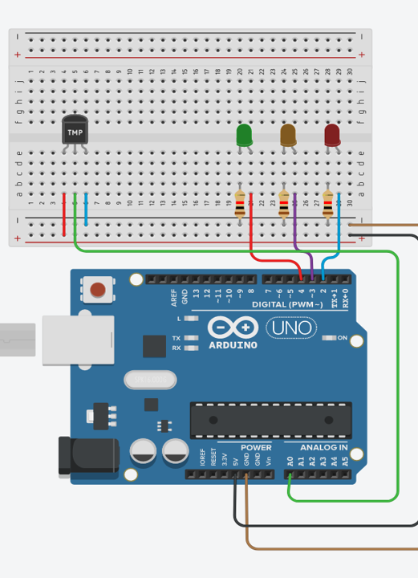

Team Project Idea
Anlen Fridge - Software
The main software that is necessary for the systems to work seamlessly is Artificial Intelligence, or AI. AI will be needed for the computer vision and the food recommendation function. Since we are not technically knowledgeable enough to make or simulate these functions, we decided that thorough research and literary review will be done for this part. We will come up with proposed ways we can use the current technology to achieve the goals for the fridge functions, mainly focusing on the computer vision function.
In our research, we have identified a key technology that will be used in our computer vision technology: deep learning. Deep learning is a technology that enables such functions such as classification of images. Using the cameras that are placed inside the fridge, it can take images of the food as it being put inside the fridge and while it stays there. It can then, for example, identify if a piece of beef or pork has been put inside the fridge. Based on a few metrics such as color, it can then classify the piece of meat as fresh or not and calculate the time it has left still being useable. Combined this with information such as the time it has been put inside the fridge, it can then do things such as notify the user that they should use the item soon (more details in the app section). A test with real images, however, is yet to be performed for this functionality.
We have yet to be able to implement the image classification algorithim. However, we have done a prototype for a secondary function of the fridge, which is the door opened notification system that would notify your app if you have left the door open for a set period of time. This function will be useful in preserving the energy usage of the fridge, as well as preventing the food being spoiled as a result of door being left opened.
For this function, we implemented it using Arduino IDE (Arduino 1.8.10), which could be downloaded on the main Arduino website without any additional fee, as one of the main methods to develop the code and upload it to the microcontroller. Another approach is to use Arduino Web Editor, again, is provided with no charge on the main Arduino website, to store our code on their cloud and use it as a backup in case if needed. Although Arduino Web Editor is free, an account is needed to use it. We also use an Arduino simulator to test our code and debug it, this simulator is available at TinkerCAD.com and it’s completely free of charge.
